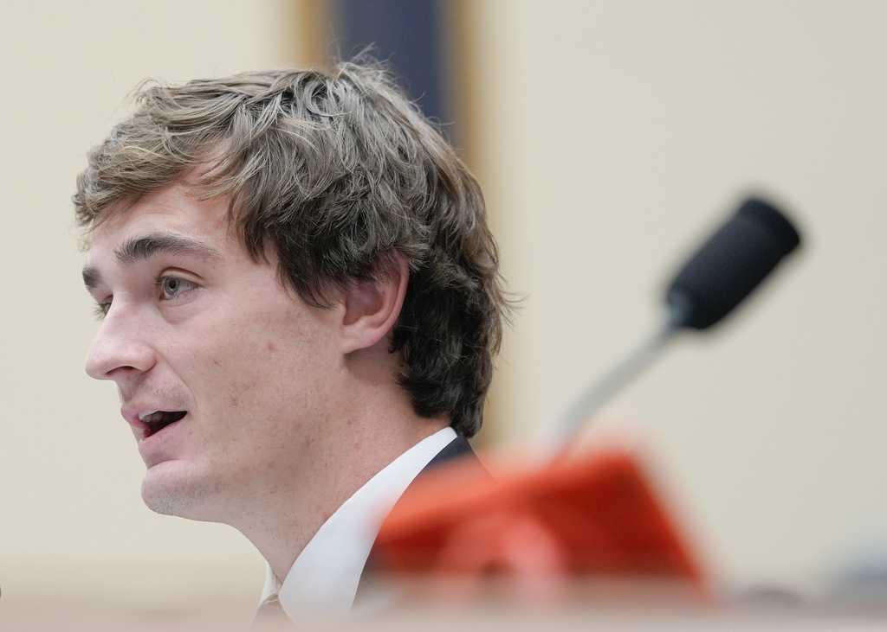
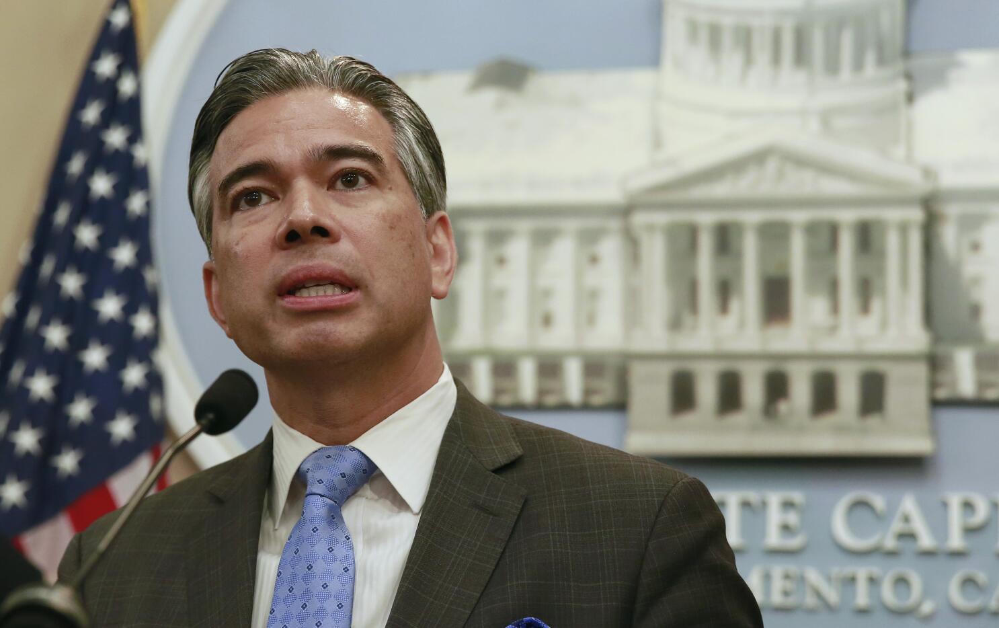

Official stream: City of Fresno Council, Boards, and Commissions. Open at 1:49:12
What This Hearing Was
Body
Fresno Planning Commission
Same Council Chambers. Different legal body than City Council.
Speaker start
1:49:12
6,552 seconds into the official file. Wednesday, August 19, 2026, 6:00 p.m.
Posted agenda
Revised SEDA plan
The comment did not stay inside the acreage fight. It named predators, grift, and misdemeanor non-enforcement.
Vote later that night
6-1 to recommend SEDA
Attendance near 160. City Council still holds the later vote.
Spoken Record
Reconstructed from the speaker's speech-to-text draft and his parenthetical delivery notes. Filler repeats cleaned. Profanity restored as spoken. Parentheticals are not words said into the mic.
Howdy. My name is Aaron. I was actually running for District 3 city council, and I dropped out of the race. I dropped out of the race when I heard a guy saying, I violated PC 311.11, but I still still wanna run.
There's predators in Fresno. You don't have to look hard.
This homeless problem is a criminal piece of shit problem. It's not a homeless problem.
And it's enabled by government funds that are being siphoned off by criminals that sit in positions like you guys sitting right here.
And unwilling to work with the federal authorities is an excuse to continue to grift off the tax dollars. Because there's not enough productive things going on right here in this city that you gotta take from the federal government.
It's inexcusable.
I'm not gonna hear anything about a homeless problem. It's a criminal problem.
You need to enforce the misdemeanors. I live by the canal. There's a Penal Code 374.7. I've never seen it used.
Every day, I pick no fewer than 10 items of trash. 721 E La Sierra Drive.
Nobody's gonna enforce a misdemeanor. Certainly not a thousand dollar fine and six hours of picking up trash for dropping a gum wrapper.
But broken window theory works. And all of you people violating the ethical responsible position that you were elected for to take money into your hands.
You best work with the government. You best become a whistleblower. Or you're gonna go down. I'm done.
Delivery notes from the speaker: the look around the room on "predators" was to keep the charge civic and citywide, not a pointed finger at one person in the chair. The desk tap on "not enough productive things" was for the mic. "You people" was loaded on purpose. He reports holding the last stretch inside decorum rules.
The Steel-Man of What He Told the Room
Start with the dropout. California Penal Code 311.11 is possession or control of child sexual abuse material. A candidate who treats that statute as a resume footnote is the proof, in one sentence, that the local filter is broken. He did not stay in District 3 to normalize that. He walked. Then he used the remaining minute at the commission to say the filter failure is not unique to one campaign filing.
"There's predators in Fresno. You don't have to look hard." Broad on purpose. The High Tower District crime-watch work has been making the same point for months: child exploitation is not a distant Sacramento topic. It is a local presence problem. If the political class will sit next to a 311.11 admission and keep talking housing units, the class has already chosen a side.
Then the reframe. "Unhoused" and "homeless problem" are the official nouns. His noun is crime. Open disorder, theft of program funds, and refusal to work with federal investigators are not a social-service shortfall. They are a business model. "Unwilling to work with the federal authorities" is the alibi that keeps the draw incoming. If the city had enough lawful local production, it would not need to treat federal transfers as oxygen.
That is why he aimed the sentence at the dais in general. Not one name. The class that sits in the chairs, takes the funds, and calls non-cooperation a values disagreement. Grift is the word he used. Federal penitentiary is the endpoint he has been attaching to that word. The spoken closer is shorter: whistleblow, or go down.
374.7 and Broken Windows
Penal Code 374.7 makes it a misdemeanor to litter or dump waste into a canal or within 150 feet of the high-water mark. First conviction: mandatory fine $250 to $1,000. The court may also order at least eight hours of litter pickup as a probation condition. He said a thousand dollars and six hours. The statute is in the same neighborhood. He has never seen it used on the canal by 721 E La Sierra Drive, where he says he picks up no fewer than ten items a day.
That is the Huntington Beach point without needing the full lecture. Michael Gates made a record there that misdemeanor enforcement is not cruelty. It is the first rung. If gum wrappers and canal trash are invisible to the city, tents, pipes, and recruitment will be invisible too. Broken windows is not a metaphor in that sentence. It is the method.
A city that will not write the smallest ticket has already announced it will not write the larger one.
Shirley in Sacramento, Bontas in the Org Chart

On August 26, Shirley stood with Republican lawmakers at the California Capitol against AB 2624, the Mia Bonta bill opponents call the Stop Nick Shirley Act. Newsom signed it August 22. About 500 people on the steps. Counterprotesters. Assault arrests. Strickland's line at the mic: California needs Shirley more than ever because the Attorney General is not prosecuting the theft.
That is the statewide rhyme of the Fresno minute. Local officials call the street a homeless problem and call federal partnership optional. Sacramento answers an investigator with an address-confidentiality statute aimed at the people who film the pipeline. Rob Bonta's office has, in other cases, sued Homekey operators over more than $114 million. The same office has also sued to lock cities into the state's housing architecture and to block federal Continuum of Care shifts. Selective fraud cases do not cancel the alibi structure the comment named: we cannot work with federal authorities, therefore the draw continues.

"Unhoused" as the Soft Word for the Hard Draw
He refused the noun. Not unhoused. Not a housing shortage in that minute. A criminal problem enabled by government funds siphoned by people in the chairs. That is the propaganda fight he asked this page to name. The official word moves the listener from conduct to status. Status gets a program. Conduct gets a statute. Programs draw. Statutes threaten the draw.
Fresno already has an anti-camping ordinance and a lawsuit against it. Fresno and Madera then changed the 2026 point-in-time method to count only people who confirmed homelessness and agreed to a survey, then published a large drop. Method is a tool. So is vocabulary. Both can hide the same street.
The Last Four Sentences
Work with the government. Become a whistleblower. Or go down. I'm done.
That is the federal-penitentiary warning without the extra syllables. The recording is the notice. This page is the index.
Sources
- City of Fresno Planning Commission video, August 19, 2026, t=6552. Speaker reconstruction from his speech-to-text plus delivery notes, August 28, 2026.
- California Penal Code 311.11 (child sexual abuse material possession or control).
- California Penal Code 374.7 (litter or dump in canal or within 150 feet of high-water mark; first-conviction fine $250-$1,000; court may order at least eight hours of litter pickup).
- Fresno Bee and Fresnoland, August 20, 2026, Planning Commission 6-1 SEDA recommendation.
- Sacramento Bee, CapRadio, KCRA, Epoch Times, August 26-27, 2026, Shirley Capitol rally after Newsom signed AB 2624 (Mia Bonta).
- Los Angeles Times, Bonta Homekey fraud litigation against Step Up / Shangri-La.
- Fresno Bee, December 2025, anti-camping ordinance lawsuit. CalMatters / Fresno Bee, August 23, 2026, Fresno-Madera count method change.